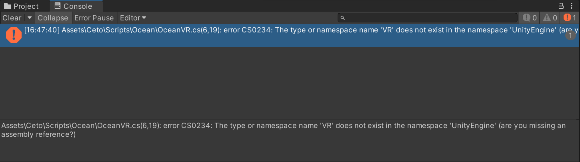
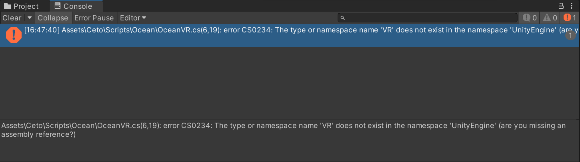

README¶
CetoManual_1_1_3.pdf | 由 Box 提供支持
Ceto (Scrawks Ocean) - Unity Forum
Scrawk/Ceto: Ceto: Ocean system for Unity
1 Adjustment¶
2 Trouble Shooting¶
[记录]开发Hololens时Unity报错缺少UnityEngine.VR命名空间的问题_泉城老侠客的博客-CSDN博客

OceanVR.cs 中进行相关修改就好了.
CetoManual_1_1_3.pdf | 由 Box 提供支持
Ceto (Scrawks Ocean) - Unity Forum
Scrawk/Ceto: Ceto: Ocean system for Unity
[记录]开发Hololens时Unity报错缺少UnityEngine.VR命名空间的问题_泉城老侠客的博客-CSDN博客

OceanVR.cs 中进行相关修改就好了.